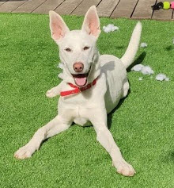

When COVID-19 started, people had no clue how the pandemic might effect their lives.
I was one of those people, who lost a well-paying job and found themselves in an uncharted teritory - unemployment.
After a few weeks at home, Meital (my perfect wife) and I decided to go though with something we postponed for a few years - adopting a pet, as being at home meant easing the adoption process.
On the 17th of april, a day before my birthday, Lucy joined the family.
The original name Lucy came with did not work for us.
We started to throw names to the table, focusing on musicians we like and pretty soon reached the beatles and their song "Lucy in the sky".
There's a saying "Dogs are men best friends", so in our case Lucy thinks our two boys are grown men. She simply loved them from day one! Entering our home for the first time you could see the joy in her eyes while she played with them on the lawn as if she has lived with us for years. It was love at first sight.
Lucy is 1.5 years old and considered a medium size dog, but she has the behavior of a much younger and smaller puppy.
She will jump on every human that walks by looking for effection, she is crazy over Tennis balls, she plays football (soccer) with us in the back yard and loves to run back and forth throwing her toys around. She demands we pet her constantly, to the point of knocking coffie mugs from the table because we sit in the living room and she must squeeze between the sofa and the table to reach us.
Her "Good Morning" usually means coming to my side of the bed and waking me up with her nose.
Some dogs eat socks and underwear so Lucy is not that bad considering.
She does however love to chew sticks of various shapes and sizes, to the point I had to hide my gardening tools, because any wooden handle might find itself chewed on the floor. But besides that, Lucy eats right and we try to keep her on a good diet, eating only her premium dog food and snacks, with occasion apple slices or choped cucumber as healthy treats.
One thing we noticed right from the start that hasn't changes to this day, is Lucy's alertness when it comes to our yard. She barks at anything and anyone that goes by from the other end, causing kids and sometimes grown people to jump in place. Reading more about that, it appears she is protecting us and therefor find it hard to stop, even if we are with her in the yard playing or sitting around. Although it might be a bit too much at times (to the point nagbhours might ask us to take her in), I kind of like it as it's one of those things that show her personality and commitment to us, ultimately making Lucy our dog.
Another special character of Lucy, she has anxiety issues.